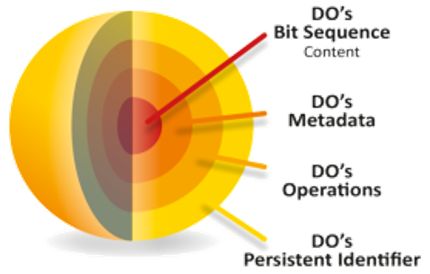

<div class='container'>
    <header class="masthead text-center">
      <p>
<h2>Turning Data to Knowledge</h2>
<p>

FAIR Digital Objects (FDO) bind all critical information about an entity in one place and create a new kind of actionable, meaningful and technology independent object that pervades every aspect of life today:
<br>
<b>A technical essence of a “thing” in cyberspace</b>.
   
<p>
   
<p>
FAIR Digital Objects can represent data, software, protocols or other research resources. They are accompanied by persistent identifiers (PID) and metadata rich enough to enable them to be reliably found, used and cited (<a href="https://doi.org/10.23728/b2share.2317b12321764f669c92ebbcf7518164">FAIR Implementation Report, Wittenburg & Strawn 2019</a>).
</p>
        <span style="display: block; margin-bottom: 3em"></span>

      <a href="https://github.com/GEDE-RDA-Europe/GEDE/tree/master/FAIR%20Digital%20Objects"><i class="fa fa-github"></i>FAIR Digital Object Framework (FDOF)</a>&nbsp;&nbsp;&nbsp;
      <a href="https://twitter.com/resdatall"><i class="fa fa-twitter"></i> RDA</a>&nbsp;&nbsp;&nbsp;
      <a href="https://twitter.com/GOFAIRofficial"><i class="fa fa-twitter"></i> GO FAIR</a>&nbsp;&nbsp;&nbsp;
      <a href="https://twitter.com/DiSSCoEU"><i class="fa fa-twitter"></i> DiSSCo</a>&nbsp;&nbsp;&nbsp;

      <div class="w3-container" style="   background: #f0f8ff; padding: 25px; border-radius:10px; border: 1px solid #5d8aa8">
        <div style="text-align:left">
          <h3> Recent News </h3>
          <span style="display: block; margin-bottom: 1em"></span>
          <div class="news">
              {% capture now %}{{'now' | date: '%s' | minus: 5184000 %}}{% endcapture %}
              <ul style="list-style-position:outside;padding:20px" >
                {% for new in site.data.news %}
                  {% capture date %}{{new.date | date: '%s' | plus: 0 %}}{% endcapture %}
                  {% if date > now %}
                    <li>
                      <span>
                        {{ new.details }}
                      </span>
                    </li>
                  {% endif %}
                {% endfor %}
              </ul>
          </div>
        </div >
      </div>

      <span style="display: block; margin-bottom: 3em"></span>

<!--
      <a class="twitter-timeline" href="https://twitter.com/DiSSCoEU">Tweets by @DiSSCoEU</a>
      <script>!function(d,s,id){var js,fjs=d.getElementsByTagName(s)[0],p=/^http:/.test(d.location)?'http':'https';if(!d.getElementById(id)){js=d.createElement(s);js.id=id;js.src=p+"://platform.twitter.com/widgets.js";fjs.parentNode.insertBefore(js,fjs);}}(document,"script","twitter-wjs");</script>
-->
      <span style="display: block; margin-bottom: 3em"></span>
      This page is maintained by <a href="https://www.rd-alliance.org/group/data-fabric-ig.html">RDA DATA FABRIC IG</a> members <br>
      <span style="display: block; margin-bottom: 3em"></span>

    </header>
</div>
